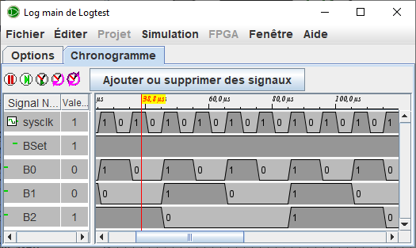

Onglet Chronogramme
Cette fenêtre permet la visualisation des signaux sélectionnés précédemment. Vous remarquerez le menu, la barre d'outils, deux zones d'affichage et les boutons.

| Le menu windowsnbsp;| ne contient qu'une option pour préciser si la fenêtre reste affichée au-dessus des autres ou si elle peut passer en arrière-plan. Par défaut elle reste au-dessus.
la barre de menu dispose de six boutons
|
|
Permets d'activer la simulation ou de la stopper. Équivalente du menu | Simulation | | Simulation enclenchée | Ctrl-E | |
|
|
Permets d'avancer d'un tic dans la simulation. Équivalente du menu | Simulation | | Simulation pas-à-pas | Ctrl-I | |
|
|
Active ou désactive l'horloge sélectionnée. Équivalente du menu | Simulation | | tics activés | Ctrl-K | |
|
|
Avance d'une demi-période l'horloge sélectionnée. Équivalente du menu | Simulation | | Tic demi-cycle | Ctrl-T | |
|
|
Avance d'une période ou d'une demi-période l'horloge. Équivalente du menu | Simulation | | Tic Cycle complet | F9 | |
| Et enfin le bouton pour Ajouter ou supprimer des signaux permet d'ouvrir la fenêtre Sélection des signaux. |
La zone d'affichage Sur la droite trois colonnes : la première présente une icône du type de signal (bus ou simple) puis nous avons le nom et enfin la valeur du signal sous le curseur (la ligne rouge dans le graphe). Il est possible de déplacer le curseur à l'aide de la souris, il suffit de cliquer et déplacer.
Pour sélectionner une des lignes, effectuez un clic-gauche si vous voulez en sélectionner plusieurs un Ctrl Clic-Gauche. Une fois sélectionnée, vous pouvez en changer l'arrangement avec un Clic gauche maintenu et déplacer. La touche Effacer(Del) permet de supprimer la ligne sélectionée.
Un clic droit ouvre un petit menu qui permet de préciser la base d'affichage, de supprimer le signal ou d'en rajouter.
Suite : L'onglet Options.